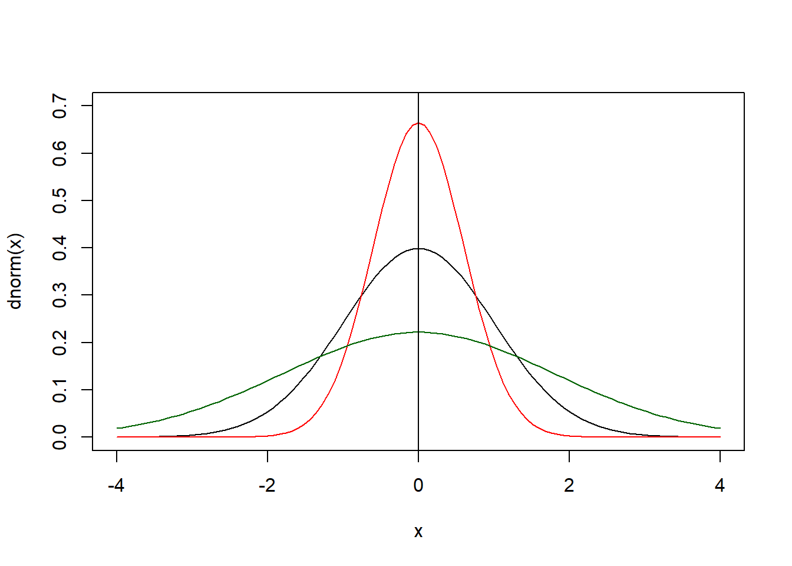

2 Estadística Descriptiva
La esdística descriptiva tiene la finalidad de describir la información vinculada a una población de estudio, este concepto de describir se refiere a buscar herramientas adecuadas según el tipo de información de la población, con un enfoque matemático.
La población de estudio se supone que es una población conocida por completo, donde se puede identificar claramente a las unidades que la componen.
2.1 Población objetivo
La población objetivo es la colección de las unidades que el investigador social quiere conocer, de esta población objetivo nos puede interesar características individuales o colectivas.
Vamos a suponer que la población objetivo es finita, es decir que tiene un tamaño delimitado, este tamaño de la población lo vamos a denotar con la letra \(N\).
La población objetivo puede estar compuesta por unidades simples o también por unidades compuestas; personas, hogar, barrio/comunidad, municipios.
De manera formal, denotemos a la población objetivo (universo de estudio) como \(U\). Esta \(U\) es un conjunto de unidades, estas unidades las denotamos por \(u\).
\[U=\{u_1,u_2,u_3,\ldots,u_N\}\]
2.2 Unidades estadísticas
Son unidades que nos permiten entender de mejor forma el acceso a la población de estudio.
- Unidades simple (elementales): Son las unidades más pequeñas de una población
- Unidad de análisis/investigación: Es la unidad de la cual se busca obtener información, es sobre la cual se esta realizando la investigación
- Unidad de información: Es la unidad de la cual se obtiene la información de la unidad de análisis.
- Unidad compuesta o agregada: Es una colección de unidades más pequeñas
Por ejemplo, en una investigación se quiere estudiar el estado nutricional de los niños/as de hasta 12 meses de edad que viven en el municipio de El Alto.
- Unidad de análisis: Los/las niños/as de 12 meses o menos
- Unidad de información: Los padres o tutores
2.3 Coberturas estadísticas
Son características de la población de estudio que nos permite comprender de mejor forma a esta población
- Cobertura espacial/geográfica (Donde): Se refiere a conocer el lugar o espacio territorial que ocupa la población de estudio.
- Cobertura temporal (Cuando): Se refiere al periodo al cual pertenece la información recolectada de la población. (Periodo de referencia del estudio)
- Cobertura temática: Se refiere a los tópicos/temas sobre los cuales gira la investigación en la población objetivo.
2.4 Clasificación de las variables según su naturaleza (Tipología de las variables)
Para las unidades de la población objetivo \(U\), estas unidades \(u_i\) tienen características asociadas, las cuales se denominan variables.
\[u_i=\{X_1,X_2,X_3,\ldots,X_p \}\]
Por ejemplo:
\[u_{Maria}=\{edad,sexo,peso,estatura,dirección,...\}\] Estas variables se pueden clasificar en 2 grupos; variables cualitativas o variables cuantitativas.
2.4.1 Variables cualitativas
Expresan cualidades de las unidades de análisis, la principal característica de estas variables es que no es posible realizar operaciones matemáticas sobre ellas.
Las variables cualitativas normalmente tienen niveles dentro de su definición; por ejemplo la variable sexo tiene dos niveles hombre y mujer. Otro ejemplo, Estado civil; sus niveles pueden ser soltero/a, casado/a, viudo/a, separado/a, etc. Én base a los niveles y la posible jerarquía entre sus niveles, las variables cualitativas tienen una siguiente clasificación.
Variables cualitativas nominales: Son variables donde los niveles/categorías no tiene un orden de importancia o jerarquía entre ellos.
Variables cualitativas ordinales: Las categorías o niveles de la variable definen un orden de importancia. Ejemplo, una calificación del tipo; malo, regular y bueno
Algunos ejemplos: (nombre de la variable, niveles/categorías, nominal/ordinal)
- Formación universitaria: Ninguno, técnico medio, técnico superior, licenciatura, maestría, doctorado. (Ordinal)
- Medalla: Oro, plata y bronce. (Ordinal)
- Nivel socio económico: Alto, medio y bajo (Ordinal)
- Grupo sanguineo: A,B,AB,O (Nominal)
- Grado militar: Soldado, sargento, capitán, general (Ordinal)
- Colores: Rojo, amarillo, verde, etc. (Nominal)
- Fecha de nacimiento, nominal
- Religión, nominal
- Orientación sexual: heterosexual, homosexual, bisexual (Nominal)
- Nacionalidad, nominal
- Número de celular, nominal
- Número de CI, nominal/ordinal
Algunas notas:
- Saber diferenciar a estas variables nos permite elegir métodos y gráficos estadísticos más adecuados
- En la práctica de recolección de información se recomienda realizar un proceso de codificación sobre las variables cualitativas, esta codificación tiene el objetivo de facilitar el proceso de análisis y no necesariamente fija un orden en las variables.
- Importan el contexto en el que se use una variable para definirla como ordinal o nominal
2.4.2 Variables cuantitativas
Expresan cantidad de algo, son numéricas y por lo tanto se pueden realizar operaciones matemáticas sobre ellas. Por ejemplo, la edad, el número de personas en un barrio, número de trabajadores en un empresa, entre otros.
Las variables cuantitativas se pueden clasificar de la siguiente forma:
- Variables cuantitativas discretas Se pueden enumerar o contar
- Variables cuantitativas continuas No se pueden enumerar o contar. Ejemplo, imaginar todos los números que existen entre el 0 y el 1, si nos ponemos en el 0 quien es el siguiente. \(\{0,0.000000000000001,0.00001,0.0001,0.001,0.002,0.1,0.2,\ldots ,1\}\)
- Variables cuantitativas de escala/intervalos se agrupan los valores en categorías ordenadas
Ejemplo para la edad, la edad puede ser discreta, continua o por escala 15-20,21-50.>50.
Ejemplos para una persona.
- Peso en kilogramos (discreta)
- Número de hijos (discreta)
- Edad en años (discreta)
- Estatura (continua)
- Estatura en centímetros (discreta)
- Ingresos mensuales en Bolivianos (discreta)
- Número de veces que la persona come en un día (discreta)
- Número de miembros de su hogar (discreta)
- Número de compañeros en una clase (discreto)
- Peso en kilogramos en la escala: 30-50, 51-70,71-100,>100 (escala/intervalo)
2.5 Organización los datos
Esta orientada en la diversas formas en las que la información se puede organizar una vez que esta fue recolectada. Existen al menos 3 formas de organizar los datos provenientes de una variable de interés.
- Datos están en su forma más simple
- Datos están agrupados
- Datos están agrupados en escalas (cuantitativas)
Ejemplo, se tiene una población de 10 personas, a las cuales se les pregunto el sexo y la edad.
2.6 Medidas estadísticas
- Conteos; Cualitativas, cuantitativas
- Porcentajes (%); Cualitativas, cuantitativas
- Tendencia central: Cuantitativas
- Variabilidad: cuantitativas
- Forma: Cuantitativas
- Concentración: Cuantitativas
2.7 Conteos, frecuencias absolutas y acumuladas
Son medidas que parten del proceso de conteo y además dan información respecto la acumulación de información. Vamos a definir las filas de una tabla como \(i=\{1,2,\ldots,k\}\), donde \(k\) es el número de filas en una tabla de datos agrupados.
- Frecuencia absoluta (\(f_i\)): El conteo para una determina fila
- Frecuencia absoluta acumulada (\(F_i\)): Denota el conteo acumulado de \(f_i\) hasta la fila \(i\)
- Frecuencia relativa (\(r_i\)): Denota la proporción relativa (sobre 1) de la información dada en \(f_i\)
\[r_i=\frac{f_i}{\sum_U f_i}=\frac{f_i}{N}\] Donde \(N\) es el tamaño de la población, \(\sum_U f_i\) hace referencia a la suma de todas las \(f_i\).
\[f_1+f_2+f_3+\ldots+f_k=\sum_{i=1}^k f_i=\sum_U f_i\] * Frecuencia relativa en porcentaje (\(r_i\%\)): Denota el porcentaje relativo (sobre 100) de la información dada en \(r_i\)
\[r_i \%= r_i*100\]
- Frecuencia relativa acumulada en porcentaje (\(R_i\%\)): Simplemente es la acumulación hasta la fila \(i\) de las \(r_i%\)
- Frecuencia relativa acumulada: Es la acumulada hasta la fila \(i\) de las \(r_i\), en la práctica no es una medida tan usual, por un tema de interpretación, se recomienda usar (\(R_i\%\))
2.8 Porcentajes
Los porcentajes son medidas relativas en un escala de 100 y buscan conocer cuanto una sub población representa respecto el total de la población.
Supongamos que miembros de una población tienen una característica \(A\), el tamaño de la población es \(N\). Entonces para obtener el porcentaje de la población que tiene la característica \(A\) usamos:
\[P_A\%=A\%=\frac{\#A}{N}*100\]
Donde \(\#A\) representa la cantidad de elementos en la población que tienen la característica \(A\), notar que siempre \(\#A\leq N\). El porcentaje \(P_A\%=A\%\) siempre esta entre 0 y 100.
Ejemplo,
El día de ayer (22 marzo, 2021) se registraron un total de 573 nuevos casos de COVID-19 en Bolivia. De estos 43 son en el departamento de La Paz, 73 en Tarija y 231 en Santa Cruz, el resto en los otros departamentos. Encuentre los porcentajes de nuevos casos en base a la información de ayer, para los 3 departamentos.
- \(P_{La Paz}\% =\frac{43}{573}*100= 7.50\)
- \(P_{Santa Cruz}\%=40.31\)
- \(Tarija\%=12.73\)
Otro ejemplo, la población de Bolivia es aproximadamente 11,787,669 para el 2021, de estas según el ministerio de salud dieron positivo a COVID-19 hasta la fecha (22/03/21) 265,207 personas, de las cuales murieron 12,074. Calcular:
- El porcentaje de positivos a COVID-19 en Bolivia: (265207/11787669)x100=2.25%
- El porcentaje de muertes por COVID-19 en Bolivia: (12074/11787669)x100=0.102%, otra forma puede ser respecto los que dieron positivo a COVID-19. (12074/265207)x100=4.55%
2.9 Medidas de tendencia central. (Medidas de centralidad)
Son medidas que buscan resumir la información dada de una variable de una población, principalmente estas medidas están diseñas para las variables cuantitativas (numérica). Las más usadas tradicionalmente son:
- Moda (\(Mo\))
- Mediana (\(Me\))
- Media, promedio (\(\bar{Y}\), \(\bar{X}\), \(\bar{edad}\))
2.9.1 Definiendo algunas operaciones matemáticas
Símbolos:
- \(\sum\): Sumatoria, se utiliza para resumir una suma.
\[1+2+3+4+\ldots+100=\sum_{i=1}^{100} i\] \[x_1+x_2+x_3+\ldots+x_N=\sum_{i=1}^{N}x_i\]
Operaciones básicas:
- \((x+y)^2=x^2+2xy+y^2\), \((x-y)^2=x^2-2xy+y^2\): Trinomio cuadrado perfecto \((x+y)^2=(x+y)*(x+y)=\)
- Factorización: \(2x+x^2=x(2+x)\)
- \(x^3*x^4=x^7\)
- \(\left(\frac{x}{y}\right)^3=\frac{x^3}{y^3}\)
- \((x^a)^b=x^{a*b}\)
- \(\sqrt{x}=x^{1/2}\), \((\sqrt{x})^2=(x^{1/2})^2=x\)
- Si \(x\) es distinta de cero, \(x^0=1\)
Una actividad de ejemplo; vamos a tomar 2 variables \(x:\) ¿Cuántas horas durmió anoche? \(y:\) ¿Cuántos minutos en total tardo en llegar desde su casa hasta la universidad, la última vez que fue?
- \(X:\) 5, 7, 5, 7, 7.75, 5, 6, 6, 6, 8, 5, 4, 6 , 6, 7.5, 5, 5, 5, 6. \(N=19\)
- \(Y:\) 37, 30, 30, 40, 40, 45, 30, 60, 15, 60, 45, 53, 30, 35, 45, 60, 60, 45, 40, 40, 60. \(N=21\)
Para \(X:\) 5 ya que es el que se repite más, 6 ya que esta al medio Para \(Y:\) 40 o 35 ya que están en el centro, 60 ya que se repiten más
2.9.2 Moda
La moda es una medida estadística que se obtiene al identificar el valor que se repite más en una variable, la denotamos por \(Mo\)
En la actividad;
- \(Mo(x)=5\)
- \(Mo(y)=60\)
Nota: pueden haber casos donde más de un número se repita la misma cantidad de veces, siendo estos los que se repiten más.
En este caso decimos que existen más modas, ejemplo sea el conjunto de datos \(1, 1, 1, 2, 3, 4, 5 ,5 ,5\). Este conjunto de datos tiene dos modas el \(1\) el \(5\), ya que ambos son los que se repiten más, el conjunto de datos es bi-modal
Nota: Si no existe un número que se repita más veces, decimos que no existe moda.
Ventajas y desventajas de la Moda
Ventaja
- El cálculo es simple
- La interpretación es simple
Desventajas
- Puede dar una falsa idea de representatividad cuando algún valor extremo es más frecuente
- En grandes volúmenes de información pueden existir muchas modas
2.9.3 Mediana

La mediana es una medida estadística que se obtiene al identificar al valor central de la serie de datos ordenada. La denotaremos con \(Me\). Los pasos para obtener la mediana de una serie de datos:
- Ordenar de forma descendente (mayor a menor) o ascendente (menor al mayor) la serie de datos.
- Identificar si \(N\) es par o impar * Si \(N\) es impar la mediana es el valor que deja exactamente la misma cantidad de información a la izquierda y a la derecha
\[Me=X_{||N/2||+1}\] * Si \(N\) es par, la mediana se obtiene de los dos valores que se encuentran en el centro y se calcula la mediana de la siguiente forma.
\[Me=\frac{X_{N/2}+X_{N/2+1}}{2}\]
Ejemplo, sean los datos \(1, 1, 1, 2, 2, 3, 4, 5 ,5 ,5\), obtener la mediana. \(N=10\)
\[Me=\frac{X_{N/2}+X_{N/2+1}}{2}=\frac{X_{5}+X_{6}}{2}=\frac{2+3}{2}=2.5\]
Ejercicio, de los datos recolectados de las horas de sueño y minutos de transporte. Encontrar la mediana.
- \(X:\) 5, 7, 5, 7, 7.75, 5, 6, 6, 6, 8, 5, 4, 6 , 6, 7.5, 5, 5, 5, 6. \(N=19\)
- \(Y:\) 37, 30, 30, 40, 40, 45, 30, 60, 15, 60, 45, 53, 30, 35, 45, 60, 60, 45, 40, 40, 60. \(N=21\)
Solución:
- Para \(X\)
Ordenando el vector \(X: 4, 5, 5, 5, 5 ,5 ,5 ,5, 6, 6 ,6 ,6 ,6 , 6, 7, 7, 7.5 ,7.75, 8\)
\[Me(X)=X_{||N/2||+1}=X_{||19/2||+1}=X_{||9.5||+1}=X_{9+1} =X_{10}=6\] * Para \(Y\)
Ordenando el vector \(Y: 15, 30, 30, 30, 30, 35, 37, 40, 40, 40, 40, 45, 45, 45, 45, 53, 60, 60, 60, 60, 60\)
\[Me(Y)=X_{||N/2||+1}=X_{||21/2||+1}=X_{||10.5||+1}=X_{10+1}=X_{11}=40\]
Ejemplo, Sea \(X=\{23,34,53,23,33,44,64,12,34,99\}\) encontrar la moda y la mediana. \(N=10\)
- \(Mo(X)=23,34\), es bi-modal
- \(X: 12, 23, 23, 33, 34, 34, 44, 53, 64, 99\)
\[Me(X)=\frac{X_{N/2}+X_{N/2+1}}{2}=\frac{X_{5}+X_{6}}{2}=\frac{34+34}{2}=68/2=34\]
2.9.4 Media, promedio, media aritmética
La media es una medida estadística que tiene la principal característica; que para obtenerla contribuyen todos los valores de una variable. Tiene la lógica de repartir todo lo acumulado en partes iguales.
Ejemplo, 3 personas tienen naranjas, la primera tiene 100, la segunda 50 y la tercera 20, si se quiere repartir el conjunto de naranjas en partes iguales, ¿cuántas naranjas le toca a cada persona?.
Solución. 56.67
\[\frac{100+50+20}{3}=\frac{170}{3}=56.67\]
\[\frac{100+50+20}{3}=\frac{100}{3}+\frac{50}{3}+\frac{20}{3}=33.33+16.67+6.67=56.67\]
De manera formal la media de una variable \(X\), que se denota por \(\bar{X}\) se obtiene de la siguiente forma, para una población de \(N\) individuos:
\[\bar{X}=\frac{\sum_{i=1}^N x_i}{N}=\frac{x_1+x_2+\ldots+x_N}{N}\] Ejemplos, del ejemplo inicial. Donde \(X:\) horas que durmió la noche pasada, y \(Y:\) el tiempo en minutos que tardó la última vez de ir de su casa a la universidad.
- \(X:\) 5, 7, 5, 7, 7.75, 5, 6, 6, 6, 8, 5, 4, 6 , 6, 7.5, 5, 5, 5, 6. \(N=19\)
- \(Y:\) 37, 30, 30, 40, 40, 45, 30, 60, 15, 60, 45, 53, 30, 35, 45, 60, 60, 45, 40, 40, 60. \(N=21\)
Obtener la media de \(X\) y \(Y\).
\[\bar{X}=\frac{\sum_{i=1}^N x_i}{N}=\frac{112.25}{19}=5.91 \]
\[\bar{Y}=\frac{\sum_{i=1}^N y_i}{N}=\frac{900}{21}=42.86\] Ejemplo, en un aula de 6 estudiantes de una universidad cualquiera, se tiene registrado la edad de estos 6 estudiantes de primer año. Estas son: \(edad=\{17,18,19,19,21,55\}\). Calcular la moda, mediana y media y comentar los resultados.
- \(Mo_{edad}=19\)
- \(Me(edad)=19\)
- \(\bar{X}=\bar{edad}=24.83\)
Ventajas y desventajas de la media
Ventajas
- Todo el conjunto de información participa
- El cálculo no es complicado
- Para grandes volúmenes de información el cálculo es mas fácil que la moda y la mediana
Desventajas
- Es sensible a números atípicos en los datos
- El valor obtenido no necesariamente se encuentra dentro de la información
Nota: La media es una de las medidas estadísticas más utilizadas.
Propiedades de la moda, mediana y media.
Supongamos que tenemos un conjunto de datos \(X\) de tamaño \(N\), y sea \(a\), \(b\) valores constantes.
¿Cuál es la moda, mediana y media de una constante?
- la misma constante
Si definimos a \(Y=X+a\), ¿Cuál es la moda, mediana y media de \(Y\)?
Si definimos a \(Y=a*X\), ¿Cuál es la moda, mediana y media de \(Y\)?
Si definimos a \(Y=a*X+b\), ¿Cuál es la moda, mediana y media de \(Y\)?
Suponga que tiene las edades de un grupo de 10 personas \(X=\{20, 21,22,22,22,24,25,30,32,19\}\) sean \(a=5\) y \(b=3\),y sea:
\[Y_1=X+a\]
\[Y_2=a*X\]
\[Y_3=a*X+b\]
Encontrar la moda, mediana y media de \(X\), \(Y_1\), \(Y_2\) y \(Y_3\)
- \(\bar{X}=23.7\), mediana y moda 22
- \(\bar{Y}_1=28.7\), mediana y moda 27
- \(\bar{Y}_2=118.5\), mediana y moda 110
- \(\bar{Y}_3=121.5\), mediana y moda 113
Solución,
Para \(X\), \(\{19,20,21,22,22,22,24,25,30,32\}\)
\[\bar{X}=\frac{\sum_{i=1}^N{x_i}}{N}=\frac{19+20+21+...+32}{10}=\frac{237}{10}=23.7\] Para \(Y_1=\{19+5,20+5,21+5,22+5,22+5,22+5,24+5,25+5,30+5,32+5\}=\) \(Y_1=\{24,25,26,27,27,27,29,30,35,37\}\).
\[\bar{Y}_1=\frac{\sum_{i=1}^N{y_i}}{N}=\frac{\sum_{i=1}^N(x_i+a)}{N}=\frac{\sum_{i=1}^N x_i+\sum_{i=1}^N a}{N}=\frac{\sum_{i=1}^N x_i}{N}+\frac{\sum_{i=1}^N a}{N}=\] \[=\bar{X}+\frac{a+a+\ldots+a}{N}=\bar{X}+\frac{a*N}{N}=\bar{X}+a=\bar{Y}_1\]
\[\bar{Y}_1=23.7+5=28.7\]
Para \(Y_2=\{5*19,5*20,5*21,5*22,5*22,5*22,5*24,5*25,5*30,5*32\}\)
\[\bar{Y}_2=\frac{\sum_{i=1}^N{y_i}}{N}=\frac{\sum_{i=1}^N{(a*x_i)}}{N}=a*\frac{\sum_{i=1}^N{x_i}}{N}=a*\bar{X}\] \[\bar{Y}_2=5*23.7=118.5\] Recordar: \((5*1+5*2+5*3+5*4+5*5)=5*(1+2+3+4+5)\)
Para \(Y_3=\{5*19+3,5*20+3,5*21+3,5*22+3,5*22+3,5*22+3,5*24+3,5*25+3,5*30+3,5*32+3\}\)
\[\bar{Y}_3=\frac{\sum_{i=1}^N{y_i}}{N}=\frac{\sum_{i=1}^N{(a*x_i+b)}}{N}=a*\bar{X}+b\] \[\bar{Y}_3=5*23.7+3=121.5\]
Propiedades, sea \(X\) e \(Y\) variables y sea \(a,b\) constantes positivas.
5,5,5,5,5,5,5
- \(Mo(a)=a\), \(Me(a)=a\), \(\bar{a}=a\)
- Si \(Y=X+a\), entonces, \(Mo(Y)=Mo(X)+a\), \(Me(Y)=Me(X)+a\), \(\bar{Y}=\bar{X}+a\)
- Si \(Y=aX\), entonces, \(Mo(Y)=a*Mo(X)\), \(Me(Y)=a*Me(X)\), \(\bar{Y}=a\bar{X}\)
- Si \(Y=aX+b\), entonces, \(Mo(Y)=a*Mo(X)+b\), \(Me(Y)=a*Me(X)+b\), \(\bar{Y}=a\bar{X}+b\)
Ejemplo,
Para el 2020 el salario de 5 trabajadores era de \(2000,1500,1900,3000,2500\), para el 2021 se quiere dar un incremento del 50% a cada trabajador, además de un bono de 200 Bs. Calcular el salario promedio para 2020 y el salario promedio que se espera con el incremento y el bono. (TAREA)
Recordar que si a un número le quiero incrementar un porcentaje: \(30*1.2=30*\frac{120}{100}=36\) corresponde aumentar el 20% a 30.
\[\bar{X}_{2020}=\frac{2000+1500+1900+3000+2500}{5}=\frac{10900}{5}=2180\]
\[\bar{X}_{2021}=\bar{X}_{2020}*1.5+200=3270+200=3470\]
300+50% = 3001.5=300(150/100) = 450 100 +20% = 1001.2 = 120 350 + 76% = 3501.76 = 616 Se quiere un incremento del 5% al salario mínimo, ¿cuál será el nuevo salario mínimo para 2021?
\[2122+5\%=2122*1.05=2228.1\]
Extraer el 5% del salario mínimo actual
\[2122*0.05=106.1\] \(4000*0.7\)
2.9.5 Media o promedio ponderado
Esta medida es utilizada cuando ciertas poblaciones tienen un peso o ponderación basada en algún criterio o simplemente están agregadas.
Ejemplo, Imagine que se cuenta con 3 cursos se sexto de secundaria que dieron un examen de matemática (el mismo) sobre 100 puntos, el primer curso tiene 33 estudiantes, el segundo 42 y el tercero 35. Se obtuvo el promedio para cada curso y el resultado fue:
- C1: 56 pts
- C2: 47 pts
- C3: 59 pts
¿Cuál será el promedio en general de los tres cursos?
Ps: 53.52, 54, 36,34
Solución, sea el tamaño de los cursos \(N_1=33\), \(N_2=42\) y \(N_3=35\), \(N=N_1+N_2+N_3=33+42+35=110\), \(\bar{X}_1=56\), \(\bar{X}_2=47\), \(\bar{X}_3=59\)
\[\bar{X}_{global}=\frac{\sum_{i=1}^{110}{X_i}}{110}=\frac{X_1+X_2+\ldots+X_{110}}{110}=\]
\[=\frac{X_1^{(c1)}+X_2^{(c1)}+\ldots+X_{33}^{(c1)}+X_{34}^{(c2)}+X_{35}^{(c2)}+\ldots+X_{75}^{(c2)}+X_{76}^{(c3)}+\ldots+X_{110}^{(c3)}}{110}=\] \[=\frac{\frac{N_1}{N_1}*\left(X_1^{(c1)}+X_2^{(c1)}+\ldots+X_{33}^{(c1)}\right)+\frac{N_2}{N_2}*\left(X_{34}^{(c2)}+X_{35}^{(c2)}+\ldots+X_{75}^{(c2)}\right)+\frac{N_3}{N_3}*\left(X_{76}^{(c3)}+\ldots+X_{110}^{(c3)}\right)}{110}=\]
\[=\frac{N_1*\bar{X}_1+N_2*\bar{X}_2+N_3*\bar{X}_3}{N}=\frac{33*56+42*47+35*59}{110}=\frac{5887}{110}=53.52\]
Para datos agregados la formula de la media ponderada, suponiendo que tenemos \(k\) grupos es:
\[\bar{X}=\frac{N_1*\bar{X}_1+N_2*\bar{X}_2+\ldots+N_k*\bar{X}_k}{N_1+N_2+\ldots+N_k}=\frac{\sum_{i=1}^k N_i *\bar{X}_i}{\sum_{i=1}^k N_i}\]
Ejercicio, la estatura promedio de un grupo de 15 personas es de 159 centímetros, mientras que otro grupo de 29 personas tienen una estatura promedio de 162 cm. ¿Cuál será la estatura promedio del conjunto de personas?
160.98 cm,
\[\bar{X}=\frac{15*159+29*162}{15+29}=\frac{7083}{44}=160.98 cm\]
Tarea, para la elección de una autoridad en la universidad los estudiantes y docentes tienen voto ponderado, es decir, ambos pesan lo mismo. El candidato X obtuvo un 80% en estudiantes, mientras que en docentes un 30%. ¿Cuál es el porcentaje de apoyo en general que obtuvo el candidato X?
Solución, se tienen 2 grupos y se sabe el porcentaje de apoyo para cada grupo. \(\%X_e=80\) \(\%X_d=30\), imaginemos una población \(N=100\%\), los estudiantes y docentes pesan lo mismo, es decir \(N_e=N_d=50\%\).
\[\%X=\frac{N_e *\%X_e + N_d *\%X_d}{N_e+N_d}=\frac{50*80+50*30}{50+50}=\frac{5500}{100}=55\]
2.9.6 Medidas de tendencia central para datos agrupados y en escalas (Tabulados)
Imaginemos que tenemos el dato de la edad de 200 personas
N<-200
set.seed(999)
edad<-abs(round(rnorm(N,21,7),0))
edad## [1] 19 12 27 23 19 17 8 12 14 13 30
## [12] 22 28 22 28 11 21 22 27 6 12 26
## [23] 18 23 13 25 13 15 10 20 38 25 22
## [34] 29 19 6 18 25 25 11 18 21 12 13
## [45] 23 23 7 21 25 21 20 16 33 24 21
## [56] 23 25 12 24 17 15 29 28 29 21 13
## [67] 11 19 18 28 20 21 28 18 28 21 25
## [78] 7 24 20 16 28 12 22 13 18 31 19
## [89] 28 24 33 21 14 30 13 28 17 19 19
## [100] 23 9 24 15 16 32 3 23 31 10 16
## [111] 19 10 15 15 19 14 28 29 12 24 18
## [122] 22 6 9 30 22 23 22 28 23 18 20
## [133] 23 18 16 25 12 15 15 29 21 31 20
## [144] 27 25 17 29 22 15 28 28 31 22 26
## [155] 27 20 20 31 31 17 21 21 14 18 13
## [166] 28 31 27 16 20 17 19 23 22 21 20
## [177] 12 24 13 22 16 24 27 26 18 24 8
## [188] 21 24 19 18 27 20 20 15 24 24 14
## [199] 15 21Un problema es ordenar estos número de tal forma de calcular las medidas de tendencia central, una solución sería ordenar la información en grupos o clases.
Ante de eso, veamos un ejemplo más simple, sean las edades de 20 personas;
sort(edad[1:20])## [1] 6 8 11 12 12 13 14 17 19 19 21
## [12] 22 22 22 23 27 27 28 28 30- Moda: El procedimiento es similar a los datos simples, nos apoyamos en \(f_i\), en el caso de tablas con intervalos hablamos de un intervalo modal.
- Media: La formula para la media en tablas agrupadas es:
\[\bar{X}=\frac{\sum_{i=1}^k x_i * f_i}{N}=\frac{\sum_{i=1}^k x_i * f_i}{\sum_{i=1}^k f_i}\]
Para tablas con intervalos de clase, la \(x_i\) se denomina representante de clase y se obtiene como:
\[x_i=\frac{LI_i+LS_i}{2}\]
Para calcular la mediana en tablas con clases se utilizan los siguientes pasos:
- Localizar el intervalo que contiene la mediana. Calcular \(N/2\) e identificar el valor más cercano por arriba en la columna \(F_i\). \(N/2\leq F_i\), la clase que contiene a la mediana es la clase \(i\)
- Calcular la mediana
\[Me=LI_i+\left(\frac{\frac{N}{2}-F_{i-1}}{f_i} \right)*c_i\]
Donde \(c_i=LS_i-LI_i\) es el ancho de clase.
Para el ejercicio de excel:
\[Me=14+\left(\frac{10-6}{5} \right)*8=14+6.4=20.4\]
Para el ejercicio de las edades en excel
\[Me=20+\left(\frac{5-3}{2} \right)*5=20+5=25\]
\[Me=15+\left(\frac{5-0}{5} \right)*10=15+10=25\]
2.10 Medidas de variabilidad / dispersión
Podemos tener estas 3 poblaciones de tamaño \(N=5\), con la siguiente información:
- P1: 3 3 3 3 3
- P2: 3 2 3 4 3
- P3: 1 2 3 4 5
Obtener las medidas de moda, mediana y media de las tres poblaciones:
- P1: \(Mo=3\), \(Me=3\), \(\bar{X}=3\)
- P2: \(Mo=3\), \(Me=3\), \(\bar{X}=3\)
- P3: \(Mo=.\), \(Me=3\), \(\bar{X}=3\)
Este ejemplo muestra que las medidas de tendencia central no son suficientes para conocer la naturaleza de los datos. Las medidas de variabilidad/dispersión tienen el objetivo de informar respecto cuan diferente (variable) es la información de la variable de estudio.
load(url("https://github.com/AlvaroLimber/EST-383/raw/master/data/eh19.RData"))
x<-na.omit(eh19p$ylab)
length(x)## [1] 15789mean(x)## [1] 3074.659median(x)## [1] 2598Las medidas más usuales para conocer los niveles de variabilidad son:
- Rango
- Desviación media
- Varianza
- Desviación estándar
- Coeficiente de variación
2.10.1 Rango
Es la medida de variabilidad más fácil de calcular e interpretar, esta se obtiene de la diferencia entre el valor más grande y el valor más pequeño de los datos.
\[R_x=X_{max}-X_{min}\] El rango obtiene la distancia entre el dato más pequeño y el más grande.
Ejemplo, para las 3 poblaciones:
- P1: 3 3 3 3 3, \(R_x=3-3=0\)
- P2: 3 2 3 4 3, \(R_x=4-2=2\)
- P3: 1 2 3 4 5, \(R_x=5-1=4\)
2.10.2 Desviación media (\(DM\))
Esta medida y las siguientes tiene como base el principio de desviación o distancia al promedio, esta se desviación se denota por:
\[d_i=x_i-\bar{X}\]
Para el caso de la desviación media, esta se define como:
\[DM(x)=\frac{\sum_{i=1}^N | x_i-\bar{X} | }{N}=\frac{\sum_{i=1}^N | d_i | }{N}\] Donde las barras en las desviaciones (\(|d_i|\)) se conoce como el operador valor absoluto, este operador devuelve siempre un número positivo.
- \(|-3|=3\), \(|3|=3\), \(|-100|=100\)
Ejemplo en las 3 poblaciones:
- P1: \(X=\{3, 3, 3, 3, 3\}\), \(d_i=\{0,0,0,0,0 \}\)
- P2: \(X=\{3, 2, 3, 4, 3\}\), \(d_i=\{3-3,2-3,3-3,4-3,3-3 \}=\{0,-1,0,1,0\}\)
- P3: \(X=\{1, 2, 3, 4, 5\}\), \(d_i=\{-2,-1,0,1,2\}\)
Ahora calcular la desviación media para las 3 poblaciones:
\[DM(X_{p1})=\frac{|0|+|0|+|0|+|0|+|0|}{5}=\frac{0+0+0+0+0}{5}=\frac{0}{5}=0\]
\[DM(X_{p2})=\frac{|0|+|-1|+|0|+|1|+|0|}{5}=\frac{0+1+0+1+0}{5}=\frac{2}{5}=0.4\]
\[DM(X_{p3})=\frac{|-2|+|-1|+|0|+|1|+|2|}{5}=\frac{2+1+0+1+2}{5}=\frac{6}{5}=1.2\]
2.10.3 La Varianza y la desviación estándar
Vamos a denotar a la varianza de la variable \(x\) como \(V(x)=\sigma^2\), la desviación estándar simplemente es la raíz cuadrada de la varianza \(\sigma=\sqrt{\sigma^2}=\sqrt{V(x)}\). La varianza no tiene una interpretación directa, la medida usual en realidad es la desviación estándar que en términos prácticos su valor ronda al rededor de la desviación media. La varianza se define como:
\[V(X)=\sigma^2=\frac{\sum_{i=1}^N (x_i-\bar{x})^2}{N}=\frac{\sum_{i=1}^N d_i^2}{N}\] Por lo tanto, para la desviación estándar:
\[\sigma=\sqrt{\frac{\sum_{i=1}^N (x_i-\bar{x})^2}{N}}=\sqrt{\frac{\sum_{i=1}^N d_i^2}{N}}\]
Ejemplo en las 3 poblaciones:
- P1: \(X=\{3, 3, 3, 3, 3\}\), \(d_i=\{0,0,0,0,0 \}\)
- P2: \(X=\{3, 2, 3, 4, 3\}\), \(d_i=\{0,-1,0,1,0\}\)
- P3: \(X=\{1, 2, 3, 4, 5\}\), \(d_i=\{-2,-1,0,1,2\}\)
\[\sigma_1^2=\frac{0^2+0^2+0^2+0^2+0^2}{5}=\frac{0}{5}=0\] \[\sigma_2^2=\frac{0^2+(-1)^2+0^2+1^2+0^2}{5}=\frac{2}{5}=0.4\]
\[\sigma_3^2=\frac{(-2)^2+(-1)^2+0^2+1^2+2^2}{5}=\frac{4+1+0+1+4}{5}=\frac{10}{5}=2\]
Por lo tanto las desviaciones estándar son:
\[\sigma_1=\sqrt{\sigma_1^2}=\sqrt{0}=0\] \[\sigma_2=\sqrt{\sigma_2^2}=\sqrt{0.4}=0.63\] \[\sigma_3=\sqrt{\sigma_3^2}=\sqrt{2}=1.41\]
Ejercicio, se recolectó información de 13 estudiantes de la materia de estadística social, respecto la cantidad de horas que pasaron el día de ayer en la computadora o el celular, los datos fueron:
\[20,12,22,15,15,10,18,12,13,21,8,17,20\] * Encontrar la moda, mediana y media * Encontrar el Rango, la desviación media, la varianza y la desviación estándar
Solución
- \(Mo=12, 15, 20\)
- \(Me=15\)
- \(\bar{x}=15.61\)
- \(R=22-8=14\)
- \(d_i=\{4.39, -3.61,6.39, -0.61, -0.61,-5.61, 2.39, -3.61 ,-2.61, 5.39,-7.61, 1.39, 4.39 \}\)
- \(DM=3.74\)
- \(\sigma^2=18.39\)
- \(\sigma=\sqrt{18.39}=4.29\)
2.10.4 Formula corta para la varianza
\[\sigma^2=\frac{\sum_{i=1}^N (x_i-\bar{x})^2}{N}=\frac{\sum_{i=1}^N (x_i^2 - 2x_i*\bar{x}+\bar{x}^2)}{N}=\frac{\sum_{i=1}^N x_i^2 - 2 \bar{x}\sum_{i=1}^Nx_i+N\bar{x}^2}{N}=\]
\[=\frac{\sum_{i=1}^N x_i^2 - 2 \bar{x}\frac{N}{N}\sum_{i=1}^Nx_i+N\bar{x}^2}{N}=\frac{\sum_{i=1}^N x_i^2 - 2 N\bar{x}^2+N\bar{x}^2}{N}=\frac{\sum_{i=1}^N x_i^2 - N\bar{x}^2}{N}=\] \[=\frac{\sum_{i=1}^N x_i^2}{N} - \bar{x}^2=\sigma^2\] Así, la formula alternativa para calcular la varianza es:
\[V(X)=\sigma^2=\frac{\sum_{i=1}^N (x_i-\bar{x})^2}{N}=\frac{\sum_{i=1}^N x_i^2}{N} - \bar{x}^2\] ### Propiedades de la varianza
Sea \(X\) una variable y \(a\), \(b\) constantes.
- \(V(a)=0\), la varianza de una constante es 0
- \(V(aX)=a^2V(X)\)
- \(V(X+a)=V(X)\), \(V(X-a)=V(X)\)
- \(V(aX+b)=a^2V(X)\)
2.10.5 Coeficiente de variación
A diferencia de todas las medidas anteriores, esta medida es relativa.
\[cv(x)=\frac{\sigma}{\bar{x}}\]
\[cv(x)\%=\frac{\sigma}{\bar{x}}*100\] Para la interpretación, si el coeficiente de variación es cercano a 0 significa que la variabilidad en los datos es baja, si es cercano a 1 la variabilidad es muy alta.
Ejemplo, para la siguiente serie de números calcular el coeficiente de variación:
- 3, 5, 5, 7, 4, 9, 10, 2, 5, 6
Solución, se debe encontrar la media y la varianza
\(\bar{x}=\frac{56}{10}=5.6\)
Para la varianza se emplea la formula alternativa
- \(x_i^2=\{9,25,25,49,16,81,100,4,25,36\}\)
\[\sigma^2=\frac{370}{10}-5.6^2=5.64\] Finalmente,
\[cv(x)=\frac{\sigma}{\bar{x}}=\frac{\sqrt{\sigma^2}}{\bar{x}}=\frac{\sqrt{5.64}}{5.6}=\frac{2.374868}{5.6}=0.4241\]
\[cv(x)\%=42.41\]
2.10.6 Medidas de variabilidad para datos agrupados.
En los datos agrupados tenemos los datos agrupados simples y los datos agrupados por escalas, para los datos en escalas se trabaja con el representante de clase.
Rango, para datos agrupados
\[R=X_{max}-X_{min}\]
Rango, para datos agrupados por escala
\[R=LS_{max}-LI_{min}\]
Desviación media
\[DM(x)=\frac{\sum_{i=1}^k | x_i-\bar{X} |*f_i }{N}=\frac{\sum_{i=1}^k | d_i |*f_i }{N}\]
- Varianza
\[V(X)=\sigma^2=\frac{\sum_{i=1}^k (x_i-\bar{x})^2 f_i}{N}=\frac{\sum_{i=1}^k x_i^2 f_i}{N} - \bar{x}^2\]
2.11 Medidas de forma
Estas medidas nos ofrecen información respecto la forma de la distribución de los datos.
2.11.1 Simetría y asimetría
Esta medida nos informa si los datos presentan valores dispersos en alguna de las colas, el concepto de simetría se refiere que para ambos lados de la media de la distribución son similares.
De manera gráfica, imagine que tenemos el dato de las edades de las personas en una población, y sobre ellas graficamos el histograma
set.seed(9999)
x<-round(rnorm(10^6,50,6))
hist(x,xlab="edad",main="Simetría")
abline(v=mean(x),col="red",lwd=2)Para medir la asimetría o simetría de los datos, existen varias medidas, entre las más usuales; coeficiente de asimetría de Fisher, coeficiente de asimetría de Pearson, coeficiente de asimetría de Bowley
Coeficiente de asimetría de Fisher:
Para datos simples
\[CA_F=\frac{\sum_{i=1}^N (x_i-\bar{x})^3}{N*\sigma^3}\]
Para datos agrupados
\[CA_F=\frac{\sum_{i=1}^k (x_i-\bar{x})^3 f_i}{N*\sigma^3}\] La interpretación:
- \(CA_F=0\) las datos son simétricos
- \(CA_F<0\) los datos son asimétricos negativos
- \(CA_F>0\) los datos son asimétricos positivos
2.11.2 Kurtosis o medida de apuntalamiento
Mide el grado de apuntalamiento (cercanía) de los datos al rededor de la media.
curve(dnorm(x),xlim = c(-4,4),ylim=c(0,0.7))
curve(dnorm(x,0,0.6),add = T,col="red")
curve(dnorm(x,0,1.8),add = T,col="darkgreen")
abline(v=0)
La formula es para medir la kurtosis es:
Para datos simples:
\[K=\frac{\sum_{i=1}^N (x_i-\bar{x})^4}{N*\sigma^4}-3\] Para datos agrupados:
\[K=\frac{\sum_{i=1}^k (x_i-\bar{x})^4 f_i}{N*\sigma^4}-3\] La interpretación:
- \(K=0\), Mesocúrtica (curva negra)
- \(K<0\), Platicúrtica (curva verde)
- \(K>0\), Leptocúrtica (curva roja)
2.11.3 Quantiles
Para entender los quantiles recordemos a la mediana, la mediana es el valor que acumula hasta su valor el 50% de la información. Los quantiles hacen exactamente lo mismo que la mediana pero hasta un determinado valor (quantil). Los quantiles más comunes son:
- Los quantiles que dividen en cuatro a la población: Cuartiles \(Q_{25},Q_{50},Q_{75}\)
- Los quantiles que dividen en cinco a la población: Quintiles \(Q_{20},Q_{40},Q_{60},Q_{80}\)
- Los quantiles que dividen en 10 a la población: Deciles \(Q_{10},Q_{20},Q_{30},Q_{40},Q_{50},Q_{60},Q_{70},Q_{80},Q_{90}\)
- Los quantiles que dividen en 100 a la población: Percentiles \(Q_{1},Q_{2},Q_{3},\ldots,Q_{99}\)
Para calcular estos quantiles, se debe contar con una tabla de datos agrupados por escalas, dado que estas medidas son mas usadas cuando tenemos gran cantidad de información. Los pasos para calcular cualquier quantil son:
Imaginemos al quantil \(Q_q\), los pasos:
- Calcular \(N*(q/100)\)
- Buscamos en la tabla la clase que contiene al quantil \(q\) en base al anterior valor, de tal forma que se cumpla:
$$N*(q/100)\leq F_i$$esa clase \(i\) es la clase que contiene al cuantil \(q\)
- Calcular el quantil, mediante la formula:
\[Q_{q}=LI_i+\left(\frac{N*(q/100)-F_{i-1}}{f_i} \right)*c_i\] Imaginemos que tenemos el dato de edad de un grupo de 250 personas, distribuidas como la muestra el excel.
Para el \(Q_{25}\), \(q=25\).
\[N*(q/100)=250*(25/100)=62.5\] 2.
\[62.5 \leq F_i=70\] 3.
\[Q_{25}=20+\left(\frac{62.5-25}{45} \right)*10=28.33\]
Así, podemos decir que el 25% de esta población tiene una edad de 28.33 años o menos, también, el 75% de esta población tiene una edad mayor a 28.33 años
2.12 Gráficos
Los gráficos son una herramienta estadística visual, muchas veces son una mejor alternativa a las tablas o cuadros, si objetivo es simple; Resumir la información en forma visual. En el último tiempo se han popularizado bastaste, principalmente con la denominada visualización de datos.
El flujo de trabajo en una investigación normalmente cubre:
- Pregunta de investigación
- Revisión de literatura
- Recolección de datos
- Procesamiento de la información
- Comunicación de los resultados de investigación
En la última parte de este flujo de trabajo esta presenta la visualización de datos como una herramienta muy importante.
Al momento de realizar un gráfico se debe tener en cuenta las siguientes aspectos:
- Tener una base de datos y conocer la población objetivo
- Variables a utilizar y su escala o tipo
- Forma del gráfico (geometría del gráfico)
- Colores, formas y tamaños
- Anotaciones (texto); título central, nombre de los ejes, la leyenda, la fuente de la información.
2.12.1 Univariantes (cualitativas)
- Diagrama de barras
- Gráfico de tortas.